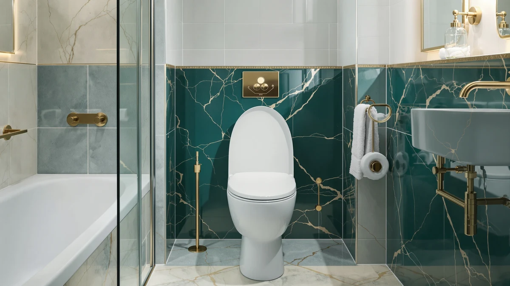

Quick Answer
This Bemis 1900 Commercial Heavy review finds a no-frills, open-front seat built for high-traffic bathrooms rather than for buyers chasing extra features. At $45.39, it costs more than the three Bemis and Church alternatives we compared it against, but its commercial-grade plastic and stainless steel hardware target offices, rental units, and other spaces that put a seat through daily abuse. If your bathroom sees light use or you want a lower price, one of the alternatives below fits better.
Our pick: BEMIS 1900 Commercial Heavy Duty — $45.39 Check Price on Amazon
Things to Know Before You Buy
- This Bemis 1900 Commercial Heavy review covers an elongated seat only, so it will not fit a round bowl. Measure your bowl before ordering.
- At $45.39, it costs more than all three alternatives in this comparison, which sit between $38.30 and $38.95.
- Its posts and pintles use 300-series stainless steel, hardware that resists rust under frequent cleaning better than standard-grade metal.
- The hinges tighten from the top, so installation does not require kneeling or reaching behind the bowl.
- We compared it against three alternatives below, including two other Bemis models and one from Church.
This Bemis 1900 Commercial Heavy review looks at whether a $45.39 open-front seat built for commercial-grade durability is worth the premium over the three lower-priced alternatives we compared it against. Offices, gyms, and rental properties need a seat that survives dozens of users a day without cracking or loosening, and most residential seats are not built with that kind of traffic in mind. The 1900 targets exactly that gap, pairing commercial-grade plastic with stainless steel hardware instead of the standard-grade parts found in cheaper seats.
The Bemis 1900 Commercial Heavy Duty is our featured pick among the four seats covered here, not because it undercuts the competition on price, but because its hardware and construction target the specific wear that comes with high-traffic bathrooms. We compared its listed price, materials, and installation design against a Church open-front model and two other Bemis seats built for different priorities, from a wood-finish soft-close option to a slow-close model. Each one solves a different problem, whether that problem is traffic volume, noise, or finish, so the right pick depends on where the seat ends up.
Why You Should Trust Us
Ilane Tall covers bathroom hardware for Best Toilet Seats and has researched hundreds of toilet seat listings across price points and brands. For this Bemis 1900 Commercial Heavy review, we did not install the seat ourselves. Instead, we compared its listed price, materials, and hardware against three competing products, then checked how its construction details line up with what commercial bathrooms actually need. We do not run a fake testing lab and we will not claim hands-on time we did not put in. Every price and material listed here comes from the product data shown on this page, and we update those figures when the underlying listing changes rather than letting a stale number sit on the page.
Our Research Experience
Our process for this Bemis 1900 Commercial Heavy review is research-based, not hands-on. We gathered the listed price, dimensions, and material specs for the seat, then compared its stated hardware, stainless steel posts and pintles, and top-tightening hinge design against the construction details of the three alternatives in this article. Reviewers of commercial-grade seats consistently flag hinge durability and ease of installation as the features that matter most in high-traffic settings, and we weighed the 1900's listed design against that pattern. We applied the same method to the Church 295CT, the Bemis Ashland, and the Bemis 7300SL, reading each listing's stated materials and hardware line by line rather than relying on marketing copy alone.
Overview & Specs

BEMIS 1900 Commercial Heavy Duty
What we like
- Stainless steel posts and pintles resist corrosion, a detail that matters in bathrooms cleaned with harsh chemicals daily
- Hinges tighten from the top, so installation does not require kneeling or reaching behind the bowl
- Commercial-grade plastic resists chips, scratches, and stains better than standard residential seats
Flaws but not dealbreakers
- At $45.39, it costs more than all three alternatives in this comparison
- Fits elongated bowls only, with no round-bowl version listed here
- The listing does not include a documented weight rating, so bariatric buyers should compare it against a dedicated bariatric model
| Material | Plastic / wood |
| Size | Elongated |
Whether the Bemis 1900 Commercial Heavy Duty seat justifies its $45.39 price comes down to the hardware most buyers never think to check. Its posts and pintles are 300-series stainless steel, a grade that resists rust and corrosion even under the frequent cleaning cycles a shared bathroom demands. The hinge design tightens from above, which means the person installing it never has to kneel on the floor or reach blindly behind the bowl, a small detail that saves real time across a property with dozens of seats to replace.
This Bemis 1900 Commercial Heavy review pick differs from the three alternatives below mainly in its focus on commercial-grade plastic rather than a softer residential finish. The seat resists chips, scratches, and staining under repeated use, which matters more in an office restroom or rental unit than in a single-family bathroom used by the same two or three people day after day. That focus on wear resistance is also why it costs more than the Church 295CT, the Bemis Ashland, and the Bemis 7300SL, each of which prioritizes a different feature over raw durability.
What We Liked
The clearest strength in this Bemis 1900 Commercial Heavy review is the hardware. Stainless steel posts and pintles hold up against rust in a way standard-grade metal cannot, and that matters in bathrooms where cleaning staff use strong disinfectants multiple times a day. A seat that corrodes at the hinge becomes wobbly and unsafe long before the plastic itself wears out, so starting with rust-resistant metal addresses the failure point that ends most cheap seats early.
We also like the installation design. Hinges that tighten from the top let you skip kneeling on the bathroom floor or reaching behind the bowl with a wrench, a detail that sounds minor until you are replacing seats across a dozen units in an afternoon. For a property manager or facilities team, that time savings adds up fast.
The commercial-grade plastic shell is the third point in its favor. It is built to resist the chips, scratches, and staining that standard plastic seats develop under constant use, exactly the kind of wear a shared office or rental bathroom produces faster than a private home ever would.
What Could Be Better
The most obvious drawback in this Bemis 1900 Commercial Heavy review is price. At $45.39, it costs more than the Church 295CT, the Bemis Ashland, and the Bemis 7300SL, all of which sit between $38.30 and $38.95. If your bathroom does not see heavy daily traffic, you may be paying for durability you do not need.
Fit is also limited. The 1900 covers elongated bowls only, and the listing offers no round-bowl version, so anyone with a round bowl needs to look elsewhere entirely. And because the product data available to us does not include a documented weight rating, buyers with bariatric needs should compare this seat directly against a model built specifically for that purpose rather than assume the commercial-duty label covers it.
Who Is It For?
This Bemis 1900 Commercial Heavy review points to one clear buyer: anyone managing an elongated-bowl bathroom that gets heavy, repeated use. Office building managers, gym owners, and landlords juggling multiple rental units all fit that profile, since they need hardware that survives frequent cleaning and constant turnover without failing at the hinge.
If your bowl is round, you need a documented bariatric rating, or you simply want the lowest price in this comparison, one of the three alternatives below will likely suit you better. A homeowner furnishing a single, lightly used bathroom has less reason to pay the premium this seat commands, since the value of its stainless hardware shows up specifically under the kind of daily abuse a shared bathroom produces. Think in terms of traffic rather than square footage: a small office restroom used by thirty people a day puts more strain on a seat than a large master bathroom used by two.
Alternatives to Consider
If the 1900 does not match your bowl shape, budget, or finish preference, we compared three alternatives worth a look for this Bemis 1900 Commercial Heavy review. Each one solves a different limitation of the Bemis pick, from price to color to noise level, and we researched each using the same price and material data shown on this page.

Editor's Pick
CHURCH 295CT Commercial Open Front
At $38.95, the Church 295CT undercuts the Bemis 1900 by $6.44 while still using a commercial-grade plastic shell and stainless steel hardware. Its Stay-Tite fastening system keeps the seat from loosening over time, making it a reasonable lower-cost alternative if you want commercial-duty hardware without paying the Bemis premium.
$38.95
Check Price on Amazon
Best Value
Bemis Ashland Modern Wood Toilet
The Bemis Ashland trades commercial-duty branding for a soft-close hinge and a biscuit finish that suits a residential bathroom better than an office or rental unit. At $38.89, it costs less than the 1900 and adds a quiet-close feature the commercial model does not offer, making it the better pick for a home bathroom that still wants Bemis-brand hardware.
$38.89
Check Price on Amazon
Premium Choice
Bemis 7300SL Slow Close Toilet
The Bemis 7300SL is the lowest-priced option in this comparison at $38.30, and it adds a slow-close seat and lid that neither the 1900 nor the Church model include. Its stay-tight hinges are built to resist loosening over time, making it a solid choice if quiet operation matters more to you than commercial-grade wear resistance.
$38.30
Check Price on AmazonFrequently Asked Questions
Final Verdict
This Bemis 1900 Commercial Heavy review comes down to a simple recommendation. For elongated-bowl bathrooms that see heavy daily traffic, the Bemis 1900 Commercial Heavy Duty earns its $45.39 price through stainless steel hardware and commercial-grade plastic built to outlast standard residential seats. Choose one of the three alternatives only if you need a lower price, a soft-close hinge, or a different finish, since the Bemis remains the strongest pick for high-traffic use among the seats covered here.